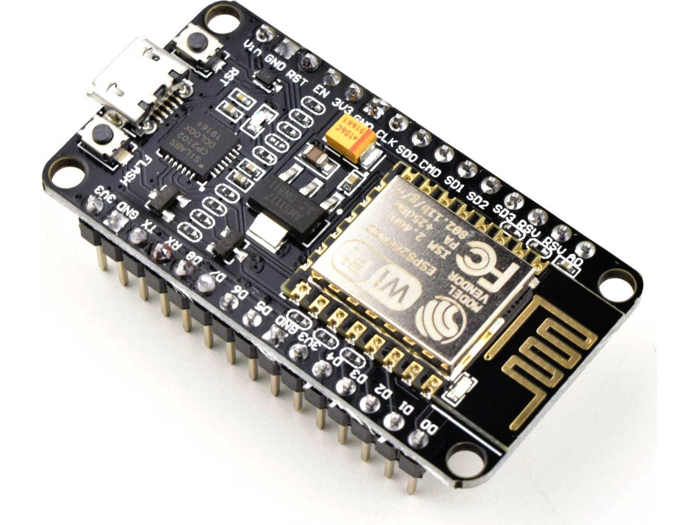
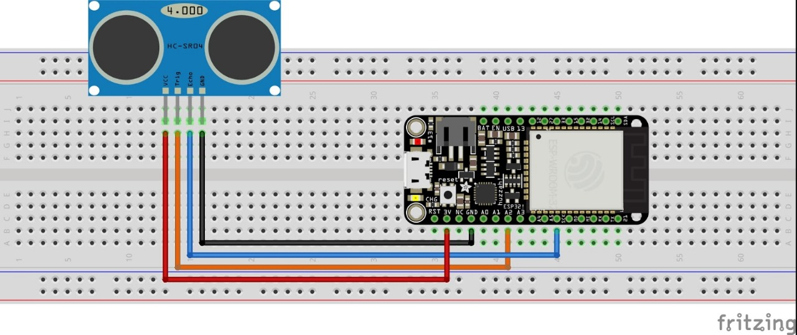

Ini adalah halaman esp8266.
ESP8266 adalah sebuah microchip Wi-Fi yang dibangun oleh Espressif Systems di Shanghai, China. ESP8266 memiliki kemampuan mikrokontroler, serta software TCP/IP networking yang terintegrasi, dan dapat digunakan secara luas dalam proyek IoT atau proyek yang berkaitan dengan WiFi. ESP8266 populer di komunitas pembuat Inggris pada bulan August 2014
Keunggulan ESP8266:
Konektivitas Wi-Fi: Kemampuan untuk terhubung ke jaringan Wi-Fi memungkinkan ESP8266 digunakan dalam proyek-proyek IoT yang memerlukan komunikasi nirkabel.
Ringkas dan Mudah Digunakan: Modul ini memiliki ukuran yang relatif kecil dan mudah diintegrasikan dengan berbagai perangkat elektronik lainnya, serta didukung oleh berbagai platform pengembangan seperti Arduino IDE dan ESP8266 SDK.
Dukungan Komunitas yang Luas: ESP8266 memiliki komunitas pengembang yang besar dan aktif, sehingga terdapat banyak tutorial, forum, dan sumber daya lainnya yang dapat membantu pengguna dalam mengembangkan proyek mereka.
Berikut adalah gambaran komponen ESP8266

Berikut adalah tabel ESP8266
| Gambar | Spesifikasi |
|---|---|
|
Berikut adalah contoh project sederhana menggunakan ESP8266
